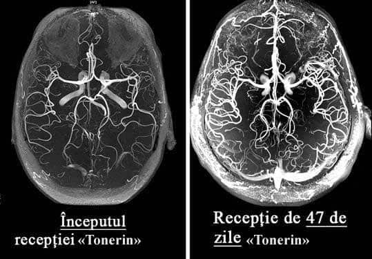
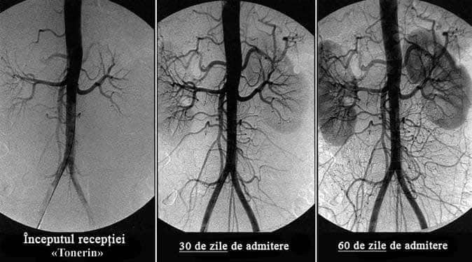

Află ce să faci dacă te doare capul, ai
zgomot în urechi și îți amorțesc membrele
Află care semne a distonie a vaselor cerebrale sunt periculoase
Viorel Lucescu
Distonia vaselor cerebrale este o afecțiune patologică în care tonusul vaselor și
circulația normală a sângelui în țesuturile creierului sunt perturbate. În acest articol, puteți citi
despre cauzele, mecanismele și simptomele acesteia la apariția cărora este timpul să bateți alarma.
Precum și despre complicațiile severe ale acestei boli insidioase și despre abordarea modernă a
metodelor disponibile tuturor.
Distonia vaselor cerebrale afectează performanța întregului organism. Din cauza alimentării
insuficiente cu sânge a creierului, scade performanța generală, apare slăbiciune, iar sistemele
importante ale corpului încep să funcționeze defectuos.
Distonia vaselor cerebrale este primul semn al „înfundării” totale a vaselor organismului cu
colesterol, afecțiune numită ateroscleroză. Vasele creierului sunt cele mai delicate și subțiri,
astfel încât acestea suferă în primul rând.
În baza
rezolvării problemei circulației sanguine proaste în vasele cerebrale se află curățarea vaselor
întregului organism de reziduurile acumulate. Plăci de colesterol, trombi și săruri de calciu.
Aflați cum vă puteți curăța vasele de sânge
la domiciliu
Aflați cum să vă curățați vasele de sânge, cum să scăpați de sute de boli „cronice” și
cum să obțineți încă 20 de ani de viață sănătoasă
din acest interviu detaliat.
Cât de periculoasă este distonia vaselor cerebrale?
Care sunt amenințările ignorării simptomelor?
De ce vasodilatatoarele prezintă pericol?
Care este legătura dintre vasele creierului, excesul de greutate, articulații și
potență?
Cum vă puteți restabili circulația sângelui și întări vasele de sânge de sine
stătător?
La
aceste întrebări ne-a răspuns expertul în domeniul chirurgiei cerebrale, șeful Fundației
”Vase Sănătoase”, expert recunoscut internațional din Romania, domnul Aurelian
Niculescu.
Dl
Aurelian Niculescu este considerat unul dintre cei mai buni specialiști în domeniul
neurochirurgiei din lume. Este autorul unor tehnici chirurgicale unice, care sunt utilizate în
întreaga lume.
Dl
Aurelian Niculescu este convins că speranța medie de viață în România poate fi mărită până la 89-93
ani, ca în țările dezvoltate. Dacă începem să explicăm pe larg cetățenilor importanța curățării
vaselor după 40 de ani.
Cât de periculoasă este distonia vaselor
cerebrale?
- Dl
Aurelian Niculescu, ce simptome ar trebui să ne atragă atenția în primul rând?
- În stadiul
inițial, distonia vaselor cerebrale se manifestă nepronunțat. Majoritatea nu acordă atenție
simptomelor, iar simptomele în sine apar, apoi dispar.
Primele semne ale tulburării circulației cerebrale, care ar trebui să vă îngrijoreze:
Zgomotul din urechi care apare fără motiv
Musculițe în fața ochilor
Senzație de amorțeală a degetelor și a feței
Dureri de cap în regiunea frunții și tâmplelor
Salturi bruște ale tensiuni (se întunecă în fața ochilor la schimbarea bruscă a poziției
corpului)
Îngheață picioarele și mâinile
Probleme de memorie
Insomnie, tulburări de somn
Umflarea mâinilor și picioarelor
Oboseală rapidă, apatie, somnolență
Odată cu
deteriorarea vaselor de sânge, se dezvoltă unele boli cronice permanente:
Hipertensiune arterială
Dureri articulare, musculare, crampe la nivelul membrelor
Tahicardie
Varice și tromboză venoasă
Slăbirea potenței, mărirea prostatei la bărbați
Încetinirea metabolismului și afectarea metabolismului grăsimilor
În pofida
faptului că nu este o boală „acută”, deteriorarea circulației sanguine a creierului este foarte
insidioasă. În cele din urmă, mai devreme sau mai târziu, aceasta duce la accident vascular cerebral,
dar până atunci torturează omul, ucigând încet funcțiile vitale ale organelor și provocând un întreg
buchet de diferite boli.
Toate aceste
boli sunt consecințe. Consecințe ale aterosclerozei vasculare, depunerii pe pereții vaselor a plăcilor
de colesterol și a trombilor. Spre regret, doar persoane unice de la noi acordă atenție curățării
vaselor, continuând să sufere ani de zile și să bea pastile inutile pentru bolile lor cronice.
- Da,
din păcate, oamenii noștri nu sunt informați despre importanța curățării vaselor.
- Nu e vina
lor. Despre ce putem vorbi când 99 din 100 de specialiști nu au auzit nimic despre nutraceutice și
necesitatea utilizării lor pentru curățarea vaselor de sânge. Și aceștia sunt oamenii la care apelăm
majoritatea dintre noi!
În țările
dezvoltate: SUA, Canada, Japonia, Elveția timp de 11 ani a fost legiferat să fie oferite nutraceutice
o dată la 4 ani fiecărui cetățean după 40 de ani. Pe alocuri gratuit, pe alocuri din contul
asigurărilor medicale.
Care sunt amenințările ignorării simptomelor?
– Ce
se întâmplă dacă ignorați simptomele „înfundării” vaselor și să luptați numai cu consecințele
acesteia?
Bolile vor
progresa, în pofida oricărui ajutor. Da, ele pot fi „atenuate” cu pastile, puteți face o intervenție
chirurgicală, dar cauza nu dispare nicăieri.
Și cu cât mai
multe reziduuri se acumulează în vase, cu atât vor fi mai grave consecințele.
La
înfundarea vaselor cerebrale de grad mediu sau mediu-sever, apar următoarele patologii:
Cu un grad
sever de contaminare a vaselor, cel mai adesea pot avea loc accident vascular cerebral
și paralizie totală sau parțială. Risc ridicat de dizabilitate sau chiar de deces. Și totul
din cauza curățării vaselor neefectuate!
Vasodilatatoarele - mai mult rău decât folos??
-
Este adevărat că vasodilatatoarele fac mai mult rău decât bine?
— Da.
Remediile vasodilatatoare sunt bune pentru situațiile de urgență. Administrarea lor frecventă creează
o sarcină uriașă asupra pereților vaselor.
Sărmanele vase suferă foarte mult din cauza „straturilor” acumulate de colesterol, care corodează
pereții epiteliului, făcându-l mai subțire. Iar vasodilatatoarele dilată vasele de sânge, creând o
suprasolicitare a pereților. Dacă în acest moment vasul nu rezistă și se rupe, atunci are loc un
accident vascular cerebral.
Din
acest motiv, vă sfătuiesc foarte atent să luați remedii vasodilatatoare și numai în cazuri
excepționale.
Este important ca toată lumea să știe acest
lucru: vasele de sânge contaminate pot provoca exces de greutate, probleme la articulații și potență!
- De
ce, în cazul dereglării circulației sanguine a creierului, femeile adesea se îngrașă, bărbații
pierd „puterea” și fac prostatită, iar articulațiile și coloana vertebrală încep să se distrugă?
- Când vasele
creierului sunt „înfundate” din cauza plăcilor, atunci acesta primește mai puține substanțe nutritive.
În fiecare an, după vârsta de 40 de ani, creierul primește cu 5% mai puține substanțe nutritive.
Prin urmare, până la vârsta de 50 de ani, alimentarea creierului se înrăutățește în jumătate.
Și acest lucru este deja foarte periculos pentru organism!
Ce
face creierul atunci când nu primește suficiente substanțe nutritive?
1. El crede că suntem înfometați și ne impune să mâncăm.
Dar, indiferent cât de mult mâncați, vasele înfundate nu permit livrarea cantităților suficiente de
substanțe nutritive către creier. Dar acestea trebuie duse undeva. Și corpul le pune la păstrare, apar
depuneri de grăsime.
2. În modul „foame”, creierul crede că murim, prin urmare, dezactivează funcțiile „inutile”
pentru supraviețuirea organismului.
Funcția de reproducere nu este necesară pentru un creier înfometat, astfel încât funcția de potență și
libidoul scad. Scade producția hormonului masculin testosteron. Aceasta, la rândul său, provoacă o
creștere în dimensiuni a prostatei și dezvoltarea prostatitei.
Funcția de recuperare este foarte consumatoare de energie și creierul o „dezactivează” până la vremuri
mai bune. Țesuturile articulațiilor nu mai regenerează: cartilajul, oasele, scade producția de lichid
sinovial (lubrificator articular). Apar dureri articulare, osteocondroză, artrită.
Aflați dacă puteți restabili circulația sângelui și
întări vasele de sânge
- Este oare posibil să curățăm vasele de sânge de sine stătător și să restabilim circulația
sângelui?
- Da. Acest lucru nu este dificil, dar necesită răbdare și disciplină. Dar merită, și efortul va fi
răsplătit.
Fundația ”Vase sănătoase” a dezvoltat un remediu unic
- nutraceuticul „”
. Specialiștii Fundației au creat un produs care nu are astăzi analogi. este absolut sigur,
nu are efecte secundare și poate fi luat fără supravegherea specialiștilor.
vă va ajuta să vă curățați vasele de orice fel de depozitări:
Plăci de colesterol
Trombi
Săruri de calciu
Rezultatele utilizării :

Timp de 1,5 luni de administrare a , circulația sângelui se restabilește cu 99,71%
Este important că circulația sângelui se restabilește sistemic: în toate vasele, arterele și capilarele.

Forma a este un „know-how”, mândria oamenilor noștri de știință. Aceasta asigură aproape 100% de
curățare a vaselor datorită fracțiunilor de CO2 active ale extractelor care pătrund în plăcile de
colesterol și le dizolvă din interior.
Contribuind la curățarea vaselor de sânge, ajută la restabilirea alimentației normale a
creierului. Începe o reacție în lanț de recuperare a organismului.
Aflați cum acționează asupra organismului
dvs.?
- acționează în 3 etape:
1. Ajută la eliminarea depunerilor din vasele de sânge
Ajută la dizolvarea plăcilor aterosclerotice, cheagurilor de sânge și sărurilor de
calciu. Contribuie la mărirea lumenului vaselor până la 99,71% din normal și la restabilirea circulației
sângelui.
2. Ajută la eliminarea efectelor circulației sanguine defectuoase
Sunt vindecate sau sunt ameliorate în mod semnificativ simptomele a astfel de boli, cum
ar fi: hipertensiunea arterială, dureri de cap, vene varicoase, tromboză, hemoroizi, prostatită. Dispare
zgomotul din urechi, amețelile, edemele, se îmbunătățește acuitatea vizuală și claritatea gândirii. Se
normalizează greutatea și metabolismul lipidic.
3. Ajută la sporirea rezistenței și elasticității pereților vaselor
de sânge Acest lucru împiedică formarea de plăci noi și reduce riscul de accident
vascular cerebral de 11 ori.
- Cât de des și cât timp trebuie luat ?
- 1 dată la 5-7 ani, începând cu 40 de ani pentru bărbați și de la 45 de ani
pentru femei. Durata curei este de 1,5 luni, în caz de simptome severe ale tulburărilor circulatorii - 2
luni.
Programul de reduceri vă va ajuta să obțineți un
remediu rar
- Din câte știm, , a dispărut din majoritatea farmaciilor? De ce și
cum poate fi obținut acum?
- Din păcate, da. De la începutul acestui an, nu mai este livrat în
farmacii.
Cauza conflictului a fost lăcomia rețelelor de farmacii care au cerut
producătorului să le plătească câte 195 pentru
fiecare unitate de produs vândută!
Reprezentanții farmaciilor se justifică spunând că un așa adaos comercial le
permite să supraviețuiască. La urma urmei, este un remediu care este cumpărat o dată la
5-7 ani. Și, în plus, după curățarea vaselor cu , persoana nu mai are nevoie de
produse care le lua în mod constant! Oamenii renunță la remedii de scădere a tensiunii, încetează să mai
cumpere produse pentru durerea articulară. Reduce semnificativ consumul de remedii pentru astm si diabet.
Și acest lucru duce la pierderi pentru farmacii. Din acest motiv, acestea insistă la stabilirea unui preț
extrem de mare pentru .
Ca rezultat
producătorul
a desfăcut contractele cu toate farmaciile și a trecut la distribuție numai prin Internet. În
principiu, este corect. Vedeți și dvs., fără plată pentru închirierea spațiilor pentru comercializare,
fără mită farmaciilor. De aceea este acum mult mai accesibil decât atunci când era vândut în
farmacii.
Programul preferențial „Vase curate”
Fundația non-profit „Vase curate”
Preț preferențial pentru ""
Fundația noastră, în cadrul online-proiectului (distribuție prin internet),
a lansat un program preferențial.
Obțineți chiar acum!
Pentru a obține la un preț special de , aveți nevoie doar de
un
telefon mobil.
Introduceți numărul dvs. în formularul de cerere oficial și faceți clic pe butonul „Obține ”.
Farmacistul nostru vă va contacta pentru a clarifica detaliile de livrare a produsului.
Important! Doar 1 cerere pentru 1 număr de
telefon!
Acum, cererile sunt acceptate și procesate 24 de ore. Dar, din cauza solicitărilor sporite, este
posibil să trebuiască să așteptați puțin.
ADĂUGAT 14.12.2022!
Din cauza numărului mare de comenzi, am fost nevoiți să limităm condițiile de desfășurare a promoției.
În prezent, promoția este valabilă până la
21.12.2022
inclusiv. Până la terminarea ei, produsul original
„” poate fi comandat prin intermediul
formularului de mai jos!
DISCUȚII
Margareta Popescu
este CEL MAI BUN REMEDIU DIN TOATE. Inițial utilizam un fel, apoi alte. Știu că sunt
învechite. La consultații nu-mi place să merg, dar nici nu mă deranja pre tare. Luam ocazional, atunci
când creștea tensiunea sau mă durea inima. Dar apoi, brusc, au încetat să mă mai ajute. Apoi m-am dus
la un specialist și el mi-a recomandat să încerc un produs nou (un specialist tânăr care,
probabil, încă mai crede că ar trebui să aducă folos oamenilor, nu pentru stoarcerea banilor!).
m-a ajutat din prima dată, tensiunea imediat a scăzut, dar totuși am urmat tot cursul așa cum
mi-a recomandat specialistul. După 4 săptămâni am uitat ce este hipertensiunea arterială. Varicele
care m-a chinuit 10 ani a dispărut! Mai aveam și o problemă ginecologică, acum nici urmă de ea nu a
mai rămas. Mă simt minunat, ca în tinerețe!
Cornel Prepeliță
Am
cumpărat o cură de 2 luni la preț de 1950 . Încă anul trecut, când se vindea în farmacii. Și
vă spun sincer, nu regret! Deși pare scump, dar am făcut deja economii anul acesta pe alte remedii
aproape de aceeași valoare. Și cât de ușor îmi este să trăiesc, nu poate fi măsurat în bani! La 52 de
ani mă simțeam ca un bătrân neajutorat. Nu plecam departe fără tensiometru și pastile hipotensive,
credeam că nu voi ajunge până la pensionare, capul mă durea în mod constant, de multe ori îmi venea un
gând nebun - de-aș scăpa mai repede de toate... Când colo, timp de 2 luni, am uitat de tensiune, mă
simt un BĂRBAT tânăr și sănătos (sper că înțelegeți despre ce vorbesc)! Prin urmare, chiar dacă nu
veți avea parte de un program preferențial și nu veți prinde reduceri, comandați neapărat, la orice
preț, nu veți regreta! Simt că în curând va fi interzis în România, deoarece foarte multor
firme le încurcă ițele și le privează de profit.
Viviana Conțul
Mulțumesc! Am reușit să comand un pachet prin formularul de pe site pentru doar !
Voi încerca.
Viorel Oancea
Ce
sunt 30 000 de ambalaje? Este o picătură într-un ocean...
Constanța Boccea
Mă
miră cei care vor totul pe degeaba!!! Toată lumea vă este datoare! Când mi-am dat seama că am nevoie
de , nu am așteptat să mi-l dea cineva pe degeaba! M-am împrumutat și l-am cumpărat! Am dat
1750 ! Și aici, nu puteți găsi , așteptați gratuit! Rușine! Ar fi trebuit să vă fie
rușine să scrieți așa ceva.
Cătălin Teodorescu
Nu
judeca și nu vei fi judecat! Nu știi ce situație are o persoană! Poate că e cu handicap, de unde să ia
banii?
Lorena Ciotu
Mamei
mele au început să-i amorțească degetele, un specialist cunoscut a sfătuit-o să curețe vasele de
sânge. I-a indicat „statine”, dar am citit că pot provoca cancer la rect și am decis să nu riscăm. În
cele din urmă, am aflat din întâmplare despre . Au cumpărat la negru, am dat 1550 L pe
o cură. Dar rezultatul nu s-a lăsat așteptat, după câteva zile am observat o îmbunătățire
semnificativă a tenului, părului, unghiilor, stării generale a organismului, iar în a doua săptămână,
degetele de la mâini aproape au încetat să mai amorțească. Timp de 1,5 luni, amorțeala a trecut
complet + s-a normalizat tensiunea. Diferența privind starea generală de sănătate e de la pământ la
cer, mama a devenit foarte energică, memoria s-a îmbunătățit, nu o mai dor articulațiile chiar și pe
vreme rea. În concluzie, produsul este super, recomand tuturor!
Nadia Pantea
Am
luat acest remediu pentru hipertensiunea. Hipertensiunea a fost mult timp partenerul meu de viață.
De-a lungul timpului, s-au mai asociat diabetul zaharat și problemele renale. Memorie foarte proastă
și scăderea vederii. Toată viața m-am luptat cum am putut. Nimic nu m-a ajutat cu adevărat. Am decis
să încerc . Prima dată am comandat mijloace pentru sănătate pe internet, dar totul a fost
simplu.
Lorena Teodorescu
Mulțumim pentru comentariu! Eu sunt o „admiratoare fidelă” de ignorare a spitalelor private, cu atât
mai mult că, de obicei, acolo prescriu sau mijloace scumpe, sau „de pe altă lume” (îmi amintesc că nu
am putut găsi niște picături pentru ochi „neobișnuite” nici într-o farmacie din București). Și nu
întotdeauna vindecătorii „văd” miezul problemei. Deja de un an, periodic, dimineața îmi amorțesc
mâinile. Datorită recenziei dvs. voi încerca . Chiar dacă mâinile amorțesc din alt motiv,
vasele de sânge oricum trebuie curățate! Sau chiar pur și simplu să bei un produs natural. Mulțumesc!
Maria Conțul
tratează foarte bine tensiunea, aproape în fiecare zi spre seara mă durea capul, îmi venea să
plâng de durere, analgezicele nu mă ajutau deloc. Mai târziu am aflat că mă durea capul de la
tensiune. Dar nu contează. O colegă mi-a recomandat , am reușit să cumpăr un ambalaj la preț de
, eram foarte
fericită. În două luni am devenit o persoană diferită! Mi-am dat seama
că, înainte de curățarea vaselor, de fapt, nici nu am trăit! Capul nu mă mai doare, varicele a trecut
și CEL MAI IMPORTANT - AM PIERDUT 20 KG! De la 94 kg la 74! Iată ce înseamnă normalizarea circulației
sangvine! Fără echivoc recomand tuturor!
Elena Dida
Am
auzit despre această metodă de curățare a vaselor, dar nu am încercat-o încă... Cred că acum este
timpul să încerc =)
Andrea Leu
Am
riscat și nu regret deloc. Dacă există probleme cu vasele de sânge, îl voi recomanda cu încredere.
Nu au existat efecte secundare, iar de rezultat am rămas foarte mulțumită
Maria Blaj
Am
hipercolesterolemie, mi-a fost recomandate pastile farmaceutice. Nu am rezistat nici măcar o
săptămână să îl iau, toți ganglionii limfatici s-au mărit, mai ales cei cervicali, nu puteam
întoarce capul. În plus, a scăzut vederea. Literalmente, în 4 zile de administrare a apărut un fel
de încețoșare a vederii. La o consultație mi s-a spus că este un efect secundar al statinelor, este
descris în reacții adverse. Mi-a prescris un înlocuitor, dar mi-a fost frică să-l iau. Acum vreau
să încerc , compoziția naturală nu ar trebui să provoace reacții adverse? În special dacă
mai pot câștiga și o reducere.
Andrei Vasilescu
este cel mai bun remediu pentru hipercolesterolemie! Nu am avut nicio reacție adversă la
el, de fapt, nici nu are cum provoca efecte adverse, este absolut natural. Cu excepția alergiei,
dar foarte rar.
Adrian Teodorescu
Cea mai bună soluție pentru hipercolesterolemie este DIETA!
Nicoleta Dumitrescu
Dieta va ajuta la protejarea împotriva formării de depozite noi, dar pe cele vechi nu le afectează.
Credeți-mă, am trecut prin această aventură cu dietele de mai multe ori.
Antonia Grădescu
Am
avut colesterolul peste 6,8, ceea ce este foarte mult pentru mine. Amețeli permanente, salturi de
tensiune și sănătate precară. Iar după 2 luni, valoarea a ajuns la 3,4. Dar cel mai important este
că mă simt bine! Acum pot nici sa nu dau analiza. Mi-am dat seama ce este un sânge „slab” și cum e
când capul funcționează bine :). Oamenii care mă întâlnesc spun că chiar și vorbirea s-a
îmbunătățit! Totul s-a schimbat.
Otilia Friptu
Semnez sub fiecare cuvânt, este unul dintre cele mai minunate, economice și eficiente
remedii! Dacă îl compari cu Crestor este de vreo 10 ori mai ieftin, iar rezultatul durează de 10
ori mai mult și nu are efecte adverse. Comandați cât există un program preferențial, noi îl folosim
cu toții


Margareta Popescu
este CEL MAI BUN REMEDIU DIN TOATE. Inițial utilizam un fel, apoi alte. Știu că sunt învechite. La consultații nu-mi place să merg, dar nici nu mă deranja pre tare. Luam ocazional, atunci când creștea tensiunea sau mă durea inima. Dar apoi, brusc, au încetat să mă mai ajute. Apoi m-am dus la un specialist și el mi-a recomandat să încerc un produs nou (un specialist tânăr care, probabil, încă mai crede că ar trebui să aducă folos oamenilor, nu pentru stoarcerea banilor!). m-a ajutat din prima dată, tensiunea imediat a scăzut, dar totuși am urmat tot cursul așa cum mi-a recomandat specialistul. După 4 săptămâni am uitat ce este hipertensiunea arterială. Varicele care m-a chinuit 10 ani a dispărut! Mai aveam și o problemă ginecologică, acum nici urmă de ea nu a mai rămas. Mă simt minunat, ca în tinerețe!